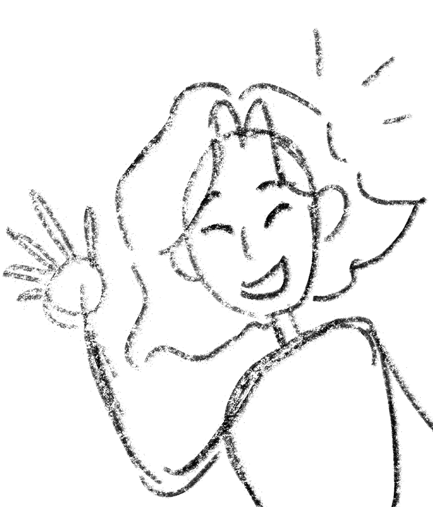

Frontend Development
Building beautiful, responsive websites with modern technologies
That's me
Welcome to my colorful world of creativity! From coding websites to crafting with yarn,
I love bringing ideas to life in many different ways.
I’m a creative who loves mixing game design, 2D animation, illustration, and frontend development. I’m at my happiest right where logic meets art, using my mixed bag of skills to build smooth systems and fun journeys for users. Whether I’m animating, coding, or storytelling, I always focus on getting the timing and look just right!
My hidden talents are all about teamwork and a sharp eye for detail. Theatre and D&D have taught me how to improvise on the fly and collaborate with others, while my passion for intricate crafts means I’m a bit of a perfectionist—I really care about making sure every project is high-quality and "pixel-perfect."

Building beautiful, responsive websites with modern technologies
Creating immersive gaming experiences and interactive worlds
Crafting vibrant digital artwork and visual designs
Bringing characters and stories to life through motion
Handmade creations from crochet to clay sculpting